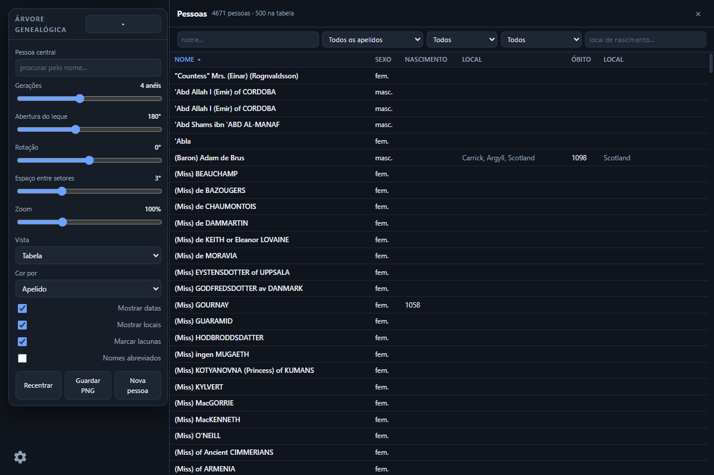

Encontrar qualquer pessoa em segundos
A tabela filtra por nome, apelido, sexo, vivos ou falecidos e local de nascimento, com colunas ordenáveis para nome, nascimento e óbito. Um clique abre a pessoa no leque.
- Centenas de milhares de linhas continuam rápidas — paginadas e indexadas.
- Os apelidos vêm de uma paleta, para as cores do leque serem coerentes.